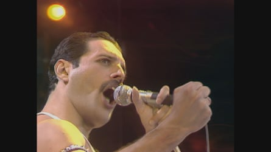

Freddie Mercury’s performance with Queen at Live Aid in 1985 is often seen as the crowning glory of one of the greatest showmen the world has ever seen.
But he still needed some very clear instructions from Bob Geldof , the festival’s organiser, before going out on stage. “Don’t get clever,” the Boomtown Rats frontman told him, according to fellow Queen members Roger Taylor and Brian May. “Just play the hits – you have 17 minutes.”
Twenty years after Live Aid, Queen’s six-song performance was voted the world’s greatest rock gig. During the short set, Mercury had 72,000 people clapping as one. Speaking to the Radio Times , Taylor, the band’s drummer, said: “During Radio Ga Ga, it did seem that the whole stadium was in unison. But then I looked up during We Are the Champions, and the crowd looked like a whole field of wheat swaying.”
The performance might never have happened, too, if it were not for the persuasive powers of May, Queen’s lead guitarist. “We weren’t touring or playing, and it seemed like a crazy idea, this talk of having 50 bands on the same bill,” May said. “I said to Freddie: ‘If we wake up on the day after this Live Aid show and we haven’t been there, we’re going to be pretty sad.’ He said: ‘Oh, fuck it, we’ll do it.’”
Mercury was told by Geldof to focus on playing Queen’s hits.Photograph: Brook Lapping/BB/Band Aid Trust
He added: “It was one of the few moments in anyone’s life that you know you’re doing something for all the right reasons.”
The singer was not the only one who wasn’t immediately convinced that Queen should even play that day. It has previously been reported that Geldof was reluctant too.
Speaking to Mojo magazine earlier this month, the promoter Harvey Goldsmith said he and Geldof were working together on the lineup. “Being the producer, I understood how slots work and who went where. I was also dealing with the technical side: we were doing two shows [London and Philadelphia] and had to stay strictly to time because of the satellite.
“I thought about it, and said for the late afternoon slot the perfect act would be Queen. Bob said: ‘No, they’ve peaked. I don’t think they should play! I said to Bob, I really think they’ll be perfect to go on in that 5.30, 6 o’clock type slot – knowing Freddie as I did, I knew they’d really make a show of it.